各位看客：
Learn-R 仍在写作流程中。本章节目前正在进行润色，基本是可读的。
Learn-R 仍在写作流程中。本章节目前正在进行润色，基本是可读的。
在绘图美学中，少即是多，使用美学映射需要节制。与其用一幅非常复杂的图形一次展示所有，不如创造一些简单的情节，讲述一个故事，让读者的认识从无到有。
ggplot2的分层结构1使得我们可以以结构化的方式设计和构建图形。一般来说，图层有三个功能：
df <- data.frame(
x = c(3, 1, 5),
y = c(2, 4, 6),
label = c("a", "b", "c")
)
p <- ggplot(df, aes(x, y, label = label)) +
labs(x = NULL, y = NULL) +
theme(plot.title = element_text(size = 12))
p + geom_point() + ggtitle("point")
p + geom_text() + ggtitle("text")
p + geom_bar(stat = "identity") + ggtitle("bar")
p + geom_tile() + ggtitle("raster")
p + geom_line() + ggtitle("line")
p + geom_area() + ggtitle("area")
p + geom_path() + ggtitle("path")
p + geom_polygon() + ggtitle("polygon")


根据x轴是否连续和是否展示中间值，比较基本的有：
df <- data.frame(x = 1:3,
y = c(18, 11, 16),
se = c(1.2, .5, 1.0))
base <- ggplot(df, aes(x, y,
ymin = y - se,
ymax = y + se))
base + geom_crossbar()
base + geom_pointrange()
base + geom_smooth(stat = "identity")
base + geom_errorbar()
base + geom_linerange()
base + geom_ribbon()

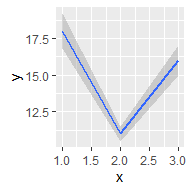


汇总数据的每一行代表多个观测值，因此需要考虑权重变量。权重变量的选择将影响绘图和得出的结论。
对于点图、线图等简单图形，使用大小（size）美学。
# Unweighted
ggplot(midwest, aes(percwhite, percbelowpoverty)) +
geom_point()
# Weighted by population
ggplot(midwest, aes(percwhite, percbelowpoverty)) +
geom_point(aes(size = poptotal / 1e6)) +
scale_size_area("Population\n(millions)",
breaks = c(.5, 1, 2, 4))对于涉及统计转换等复杂图形，使用weight美学指定权重。权重支持平滑、量化回归、箱型图、直方图、密度图等情形。我们无法直接从图中看出权重变量，它也不会产生图例，但会改变统计汇总的结果。
# Unweighted
ggplot(midwest, aes(percwhite, percbelowpoverty)) +
geom_point() +
geom_smooth(method = lm, size = 1)
# Weighted by population
ggplot(midwest, aes(percwhite, percbelowpoverty)) +
geom_point(aes(size = poptotal / 1e6)) +
geom_smooth(aes(weight = poptotal), method = lm, size = 1) +
scale_size_area(guide = "none")

这里部分内容不甚熟悉，因此有大段的原文翻译。
绘制地理空间数据是一项常见的可视化任务，它需要专门的工作。通常来讲，可以把任务分成两步：
R语言内置了地图包，虽然不是最新的，但是一个好的起点。这里从中提取密歇根州的县界：
library(tidyverse) # 用于数据处理
mi_counties <- map_data("county", "michigan") %>%
select(lon = long, lat, group, id = subregion)
head(mi_counties)
#> lon lat group id
#> 1 -83.9 44.9 1 alcona
#> 2 -83.4 44.9 1 alcona
#> 3 -83.4 44.9 1 alcona
#> 4 -83.3 44.8 1 alcona
#> 5 -83.3 44.8 1 alcona
#> 6 -83.3 44.8 1 alcona利用散点图可以看到数据集中每个县的角落，通过geom_polygon()将散点图绘制成地图：
ggplot(mi_counties, aes(lon, lat)) +
geom_point(size = .25, show.legend = FALSE) +
coord_quickmap()
ggplot(mi_counties, aes(lon, lat, group = group)) +
geom_polygon(fill = "white", color = "grey50") +
coord_quickmap()
coord_quickmap()调整坐标轴，以确保经度和纬度在同一比例上呈现。但地理空间数据往往需要更精准的方法，因此ggplot2提供了geom_sf()和coord_sf()来处理简单特征格式的空间数据。
上述方法具有局限性，最典型的是：现实世界的地图不是简单地按照”经度-纬度”的数据格式绘制的。 地图的矢量数据通常使用由开放地理空间联盟制定的”简单特征”（simple features）标准进行编码。 sf包(Pebesma 2018)为处理这类数据提供了优质的工具集，ggplot2中的geom_sf()和coord_sf()函数就是为与sf包一起工作而设计的。
library(ozmaps) # 提供澳大利亚的地图数据
library(sf)
#> Linking to GEOS 3.9.1, GDAL 3.4.3, PROJ 7.2.1; sf_use_s2() is TRUE
ozmap_states
#> Simple feature collection with 9 features and 1 field
#> Geometry type: MULTIPOLYGON
#> Dimension: XY
#> Bounding box: xmin: 106 ymin: -43.6 xmax: 168 ymax: -9.23
#> Geodetic CRS: GDA94
#> # A tibble: 9 × 2
#> NAME geometry
#> * <chr> <MULTIPOLYGON [°]>
#> 1 New South Wales (((151 -35.1, 151 -35.1, 151 -35.1, …
#> 2 Victoria (((147 -38.7, 147 -38.7, 147 -38.7, …
#> 3 Queensland (((149 -20.3, 149 -20.4, 149 -20.4, …
#> 4 South Australia (((137 -34.5, 137 -34.5, 137 -34.5, …
#> 5 Western Australia (((126 -14, 126 -14, 126 -14, 126 -1…
#> 6 Tasmania (((148 -40.3, 148 -40.3, 148 -40.3, …
#> 7 Northern Territory (((136 -13.8, 136 -13.8, 136 -13.8, …
#> 8 Australian Capital Territory (((149 -35.2, 149 -35.2, 149 -35.3, …
#> 9 Other Territories (((168 -29.1, 168 -29, 168 -29, 168 …sf数据的一个优势，在于我们可以直观地看到数据的整体结构。澳大利亚由6个州和一些地区组成，共9个地理单元，因此数据中有9行。geometry列的每个元素都是一个多边形对象，指定一个或多个多边形顶点，标示着一个地区的边界。
对于这种格式的数据，我们可以使用geom_sf()和coord_sf()绘制一张可用的地图而不需要制定任何参数，甚至不需要明确美学。
geom_sf()使用ggplot2中其他地方没有使用的geometry美学，这种美学可以通过以下三种方式之一来制定。
geom_sf()自动将名为geometry的列映射到地图中。geom_sf()自动检测geometry格式的列，即使该列名不为geometry。aes(geometry = my_column)手动指定映射，在数据中有多个geometry格式的列时很有用。ggplot2支持多层geom_sf()叠加。使用rmapshaper包(Teucher and Russell 2022)简化边界，以减少渲染绘图的时间。当原始数据集（本例中为abs_ced）的存储分辨率高于绘图要求时，这通常是个好主意。
oz_states <- ozmap_states %>% filter(NAME != "Other Territories")
oz_votes <- rmapshaper::ms_simplify(abs_ced)
#> Registered S3 method overwritten by 'geojsonlint':
#> method from
#> print.location dplyr
ggplot() +
geom_sf(data = oz_states, mapping = aes(fill = NAME), show.legend = FALSE) +
geom_sf(data = oz_votes, fill = NA) +
coord_sf()
图上添加标签：
sydney_map <- abs_ced %>% filter(NAME %in% c(
"Sydney", "Wentworth", "Warringah", "Kingsford Smith", "Grayndler", "Lowe",
"North Sydney", "Barton", "Bradfield", "Banks", "Blaxland", "Reid",
"Watson", "Fowler", "Werriwa", "Prospect", "Parramatta", "Bennelong",
"Mackellar", "Greenway", "Mitchell", "Chifley", "McMahon"
))
ggplot(sydney_map) +
geom_sf(aes(fill = NAME), show.legend = FALSE) +
coord_sf(xlim = c(150.97, 151.3), ylim = c(-33.98, -33.79)) +
geom_sf_label(aes(label = NAME), label.padding = unit(1, "mm"))
#> Warning in st_point_on_surface.sfc(sf::st_zm(x)):
#> st_point_on_surface may not give correct results for
#> longitude/latitude data
geom_sf_label()函数内部使用sf包中的函数st_point_on_surface()来放置标签，出现上述警告是因为sf用于计算几何量（例如中心点、内部点）的大多数算法都是基于这样一个假设：点位于一个平坦的二维表面上，并以笛卡尔坐标作为参数。这种假设并不严格，在某些情况下（例如，靠近两极的地区），以这种方式处理经度和纬度的计算会得到错误的答案。因此，sf软件包在依赖这种近似方式进行计算时将产生警告。
添加其他图层：
oz_capitals <- tibble::tribble(
~city, ~lat, ~lon,
"Sydney", -33.8688, 151.2093,
"Melbourne", -37.8136, 144.9631,
"Brisbane", -27.4698, 153.0251,
"Adelaide", -34.9285, 138.6007,
"Perth", -31.9505, 115.8605,
"Hobart", -42.8821, 147.3272,
"Canberra", -35.2809, 149.1300,
"Darwin", -12.4634, 130.8456,
)
ggplot() +
geom_sf(data = oz_votes) +
geom_sf(data = oz_states, colour = "black", fill = NA) +
geom_point(data = oz_capitals, mapping = aes(x = lon, y = lat), colour = "red") +
coord_sf()
如果关注地图的准确性，利用经纬度在笛卡尔平面上进行绘制并非最佳办法，至少存在两个基本问题：
地球既不是一个平面，也不是一个完美的球体。关于地球形状的一系列假设被称为大地基准，虽然它对某些数据的可视化可能并不重要，但对其他数据来说，它是至关重要的。有几种不同的选择可以考虑：如果重点是北美，“北美基准”（NAD83）是一个很好的选择；如果视角是全球，“世界大地测量系统”（WGS84）可能更好。
地图的形状。地球近似椭圆体，但大多数情况下，空间数据需要绘制在一个二维平面上。不可能在不发生扭曲或切割的情况下把椭圆体的表面映射到一个平面上，因此必须对扭曲作出选择。这就是地图投影的工作。 地图投影通常按照它们保留的几何属性来分类，例如：
任何投影都无法做到既保形又保面积，sf允许我们可以指定想使用的地图投影。关于地图投影的更多信息，参见Geocomputation with R。
综上，大地基准（如WGS84）、地图投影类型（如墨卡托）和投影参数（如原点位置）共同指定了一个坐标参考系统（coordinate reference system，CRS）。这是一套用于将经纬度信息转换为二维地图的完整假设。一个sf对象通常包括一个默认的CRS，如下所示：
st_crs(oz_votes)
#> Coordinate Reference System:
#> User input: EPSG:4283
#> wkt:
#> GEOGCRS["GDA94",
#> DATUM["Geocentric Datum of Australia 1994",
#> ELLIPSOID["GRS 1980",6378137,298.257222101,
#> LENGTHUNIT["metre",1]]],
#> PRIMEM["Greenwich",0,
#> ANGLEUNIT["degree",0.0174532925199433]],
#> CS[ellipsoidal,2],
#> AXIS["geodetic latitude (Lat)",north,
#> ORDER[1],
#> ANGLEUNIT["degree",0.0174532925199433]],
#> AXIS["geodetic longitude (Lon)",east,
#> ORDER[2],
#> ANGLEUNIT["degree",0.0174532925199433]],
#> USAGE[
#> SCOPE["Horizontal component of 3D system."],
#> AREA["Australia including Lord Howe Island, Macquarie Islands, Ashmore and Cartier Islands, Christmas Island, Cocos (Keeling) Islands, Norfolk Island. All onshore and offshore."],
#> BBOX[-60.56,93.41,-8.47,173.35]],
#> ID["EPSG",4283]]这些输出大多对应于一个众所周知的文本（well-know text，WKT）字符串，它详细描述了CRS。sf内部使用这种冗长的WKT表示法，但是有几种方法可以提供sf理解的用户输入。其中一种方法是以EPSG代码的形式提供数字输入。oz_votes数据中的默认CRS与EPSG代码4283相对应。
在ggplot2中，coord_sf()控制CRS，以确保每一层都使用相同的投影。sf数据通常会提供一个合理的CRS选择，coord_sf()默认使用数据geometry列相关的CRS。当需要指定CRS时，可以通过向st_crs()传递crs参数：
绘制地理空间信息的第二种方式是依靠栅格数据（raster data）。与sf数据不同，栅格数据中，地理实体是以一组线、点和多边形的形式来指定的，而栅格则是以图像的形式出现。在最简单的情况下，光栅数据可能是一个有许多不同的图像格式位图文件。具体到地理空间方面，有一些图像格式包括元数据（如大地测量基准、坐标参考系统），可用于将图像信息映射到地球表面。
在GDAL（地理空间数据抽象库）的帮助下，大多数格式可以很容易地读入R。例如，sf包中的sf::gdal_read()函数提供了从R中访问GDAL的功能。不过，很少需要直接调用这个函数，因为还有其他高级函数可以处理这个问题。
举个例子，假设我们想绘制澳大利亚气象局（BOM）在其FTP服务器上公开提供的卫星图像。bomrang包(Sparks et al. 2017)提供了一个方便的服务器接口，包括一个返回文件名向量的get_available_imagery()函数和一个下载文件并直接导入R中的get_satellite_imagery()函数。
这里使用更灵活的方式，可以适用任何FTP服务器，并使用download.file()函数：
# list of all file names with time stamp 2022-08-04 21:00 GMT
# (BOM images are retained for 24 hours, so this will return an
# empty vector if you run this code without editing the time stamp)
files <- bomrang::get_available_imagery() %>%
str_subset("202208042100")
walk2(
.x = paste0("ftp://ftp.bom.gov.au/anon/gen/gms/", files),
.y = file.path("raster", files),
.f = ~ download.file(url = .x, destfile = .y)
)所有14个文件2都是由日本气象厅运营的Himawari-8地球静止卫星拍摄的图像构建的，并在13个不同的波段拍摄图像。澳大利亚BOM发布的图像包括可见光谱（频道3）和红外光谱（频道13）的数据。
为了将可见图片导入R，使用stars包(Pebesma 2022)将其导入为stars对象：
img_vis <- file.path("raster", "IDE00422.202208042100.tif")
img_inf <- file.path("raster", "IDE00421.202208042100.tif")
library(stars)
#> Loading required package: abind
sat_vis <- read_stars(img_vis, RasterIO = list(nBufXSize = 600, nBufYSize = 600))
sat_inf <- read_stars(img_inf, RasterIO = list(nBufXSize = 600, nBufYSize = 600))RasterIO参数用来向GDAL传递一列低级参数，使用了nBufXSize和nBufYSize来确保R以低分辨率读取数据（作为600x600像素的图像）。
sat_vis
#> stars object with 3 dimensions and 1 attribute
#> attribute(s), summary of first 1e+05 cells:
#> Min. 1st Qu. Median Mean 3rd Qu. Max.
#> IDE00422.202208042100.tif 0 0 0 37.9 52 255
#> dimension(s):
#> from to offset delta refsys point
#> x 1 600 -5500000 18333.3 Geostationary_Satellite FALSE
#> y 1 600 5500000 -18333.3 Geostationary_Satellite FALSE
#> band 1 3 NA NA NA NA
#> values x/y
#> x NULL [x]
#> y NULL [y]
#> band NULL注意，空间数据也与一个坐标参考系统相关联（在输出中被称为 “refsys”）。
利用stars包提供的geom_stars()函数，可以使用ggplot2进行绘图：
ggplot() +
geom_stars(data = sat_vis) +
coord_equal()geom_stars()函数要求数据是stars对象，并将栅格数据映射到填充（fill）美学。因此，上面的卫星图像中的蓝色阴影是由ggplot2的比例决定的，而不是图像本身。也就是说，尽管sat_vis包含三个波段，但上面的绘图只显示第一个波段，原始数据值（范围从0到255）被映射到ggplot2用于连续数据的默认蓝色调色板上。为了看到图像文件的真实面貌，我们可以用facet_wrap()分离这些波段：
ggplot() +
geom_stars(data = sat_vis, show.legend = FALSE) +
facet_wrap(vars(band)) +
coord_equal() +
scale_fill_gradient(low = "black", high = "white")
只显示原始图像不易弄清楚相关的陆地在哪里，我们可能希望将卫星数据与oz_states矢量地图重叠，以显示澳大利亚政治实体的轮廓。这样做需注意，这两个数据源具有不同的坐标参考系统。为了正确投影oz_states的数据，需使用sf包中的st_transform()函数对数据进行转换。下面的代码将从sat_vis栅格对象中提取CRS，并应用于oz_states，而后进行可视化：
oz_states <- st_transform(oz_states, crs = st_crs(sat_vis))
ggplot() +
geom_stars(data = sat_vis, show.legend = FALSE) +
geom_sf(data = oz_states, fill = NA, color = "white") +
coord_sf() +
theme_void() +
scale_fill_gradient(low = "black", high = "white")可以看到在这个拍摄时间，澳大利亚即将日出。
如何在上面绘制更多的常规数据呢？一个简单的例子是根据包含经纬度的oz_capitals数据框来绘制澳大利亚首都的位置。然而，由于这些数据没有与CRS相关联，并且与sat_vis中的栅格数据的比例不一样，所以这些数据也需要进行转换。为此，首先需要使用st_as_sf()从oz_capitals数据中创建sf对象：
这个投影是使用EPSG代码4326设置的，这是使用经纬度值作为坐标并依靠WGS84基准的椭圆形投影。而后可以将经纬度几何坐标转换为与sat_vis数据的几何形状相匹配。
cities <- st_transform(cities, st_crs(sat_vis))
ggplot() +
geom_stars(data = sat_vis, show.legend = FALSE) +
geom_sf(data = oz_states, fill = NA, color = "white") +
geom_sf(data = cities, color = "red") +
coord_sf() +
theme_void() +
scale_fill_gradient(low = "black", high = "white")
如果有自己的形状文件（.shp），可以用sf::read_sf()把它们加载到R中。
网络在可视化中占据了一席之地，和地图、空间数据一样，网络具有特定的数据结构和可视化范式，ggplot2并不直接支持网络图，接下来将使用ggraph包(Pedersen 2021b)进行网络的可视化。
网络数据可以编码为两个相互关联的数据帧，分别编码节点和边，这就是tidygraph包(Pedersen 2022)使用的方法，它是ggraph的基础数据处理包。
library(tidygraph)
library(ggraph)
graph <- play_erdos_renyi(n = 10, p = .2) %>%
activate(nodes) %>%
mutate(class = sample(letters[1:4], n(), replace = TRUE)) %>%
activate(edges) %>%
arrange(.N()$class[from])
graph
#> # A tbl_graph: 10 nodes and 12 edges
#> #
#> # A directed simple graph with 1 component
#> #
#> # Edge Data: 12 × 2 (active)
#> from to
#> <int> <int>
#> 1 2 9
#> 2 1 2
#> 3 6 3
#> 4 7 5
#> 5 6 10
#> 6 5 7
#> # … with 6 more rows
#> #
#> # Node Data: 10 × 1
#> class
#> <chr>
#> 1 c
#> 2 b
#> 3 d
#> # … with 7 more rows一些新函数：activate()指定在网络的哪个部分工作（节点或者边）；即使在处理边的时候，.N()也可以访问当前图形的节点数据（与之对应的.E()函数访问边的数据，以及.G()访问整个图形）。
tidygraph包的as_tbl_graph()可以将大部分不同形式的网络数据进行转换:
head(highschool)
#> from to year
#> 1 1 14 1957
#> 2 1 15 1957
#> 3 1 21 1957
#> 4 1 54 1957
#> 5 1 55 1957
#> 6 2 21 1957
hs_graph <- as_tbl_graph(highschool, directed = FALSE) # 不带方向
hs_graph
#> # A tbl_graph: 70 nodes and 506 edges
#> #
#> # An undirected multigraph with 1 component
#> #
#> # Node Data: 70 × 1 (active)
#> name
#> <chr>
#> 1 1
#> 2 2
#> 3 3
#> 4 4
#> 5 5
#> 6 6
#> # … with 64 more rows
#> #
#> # Edge Data: 506 × 3
#> from to year
#> <int> <int> <dbl>
#> 1 1 13 1957
#> 2 1 14 1957
#> 3 1 20 1957
#> # … with 503 more rowsluv_clust <- hclust(dist(luv_colours[, 1:3]))
luv_graph <- as_tbl_graph(luv_clust)
luv_graph
#> # A tbl_graph: 1313 nodes and 1312 edges
#> #
#> # A rooted tree
#> #
#> # Node Data: 1,313 × 4 (active)
#> height leaf label members
#> <dbl> <lgl> <chr> <int>
#> 1 0 TRUE "101" 1
#> 2 0 TRUE "427" 1
#> 3 778. FALSE "" 2
#> 4 0 TRUE "571" 1
#> 5 0 TRUE "426" 1
#> 6 0 TRUE "424" 1
#> # … with 1,307 more rows
#> #
#> # Edge Data: 1,312 × 2
#> from to
#> <int> <int>
#> 1 3 1
#> 2 3 2
#> 3 8 6
#> # … with 1,309 more rows我们可以看到，tidygraph在转换时自动添加了额外的信息，例如，highschool数据中的year列，以及分层聚类luv_clust中的label和leaf节点。
# 中心度计算
graph %>%
activate(nodes) %>%
mutate(centrality = centrality_pagerank()) %>%
arrange(desc(centrality))
#> # A tbl_graph: 10 nodes and 12 edges
#> #
#> # A directed simple graph with 1 component
#> #
#> # Node Data: 10 × 2 (active)
#> class centrality
#> <chr> <dbl>
#> 1 c 0.201
#> 2 c 0.191
#> 3 c 0.120
#> 4 c 0.120
#> 5 d 0.0920
#> 6 a 0.0778
#> # … with 4 more rows
#> #
#> # Edge Data: 12 × 2
#> from to
#> <int> <int>
#> 1 7 1
#> 2 9 7
#> 3 10 8
#> # … with 9 more rowstidygraph支持一系列丰富的算法，比如中心度计算（哪个节点最中心）、排序（对节点进行排序，使节点位于与之相连的节点附近）、分组（在网络内寻找群组）等，具体见这里。
网络图更关注拓扑结构而不是两个变量之间的关系，我们采用布局（Layouts）的概念来显示网络拓扑结构。布局是利用网络结构来计算每个节点的x和y值（通常是任意的）的算法，最终用于可视化。换句话说，在绘制表格数据时，x和y的美学几乎总是被数据中的现有变量（或现有数据的统计转换）映射，而在绘制网络数据时，x和y被来自网络拓扑结构的值映射，这些值本身没有意义。
ggraph(hs_graph) +
geom_edge_link() +
geom_node_point()
#> Using `stress` as default layout
ggraph(hs_graph, layout = "drl") +
geom_edge_link() +
geom_node_point()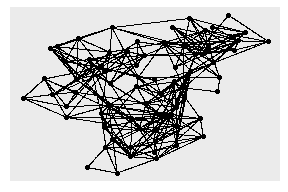
hs_graph <- hs_graph %>%
activate(edges) %>%
mutate(edge_weights = runif(n()))
ggraph(hs_graph, layout = "stress", weights = edge_weights) +
geom_edge_link(aes(alpha = edge_weights)) +
geom_node_point() +
scale_edge_alpha_identity()
# 环形
ggraph(luv_graph, layout = "dendrogram", circular = TRUE) +
geom_edge_link() +
coord_fixed()
# 只显示2个以上的节点，按中心度着色
ggraph(hs_graph, layout = "stress") +
geom_edge_link() +
geom_node_point(
aes(filter = centrality_degree() > 2,
color = centrality_power()),
size = 2
)
# 树状图
ggraph(luv_graph, layout = "treemap") +
geom_node_tile(aes(fill = depth))
#> Warning: Existing variables `height`, `leaf` overwritten by layout
#> variables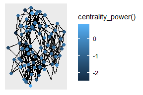

ggraph(graph, layout = "stress") +
geom_edge_link(aes(alpha = after_stat(index)))
ggraph(graph, layout = "stress") +
geom_edge_link2(
aes(color = node.class),
width = 3, lineend = "round"
)ggraph(hs_graph, layout = "stress") +
geom_edge_fan()
ggraph(hs_graph, layout = "stress") +
geom_edge_parallel()

ggraph(luv_graph, layout = "dendrogram", height = height) +
geom_edge_elbow()
ggraph(luv_graph, layout = "dendrogram", height = height) +
geom_edge_bend()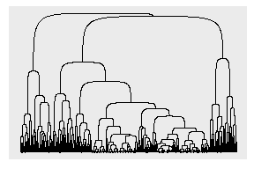
# 节点会遮盖箭头
ggraph(graph, layout = "stress") +
geom_edge_link(arrow = arrow()) +
geom_node_point(aes(color = class), size = 6)
# 解决上述问题
ggraph(graph, layout = "stress") +
geom_edge_link(
arrow = arrow(),
start_cap = circle(3, "mm"),
end_cap = circle(3, "mm")
) +
geom_node_point(aes(color = class), size = 6)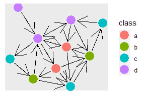
ggraph(hs_graph, layout = "stress") +
geom_edge_link() +
geom_node_point() +
facet_edges(~year)ggraph(hs_graph, layout = "stress") +
geom_edge_link() +
geom_node_point() +
facet_nodes(~ group_spinglass())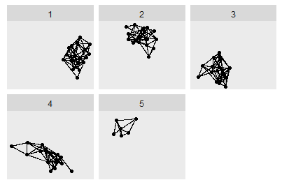
从概念上讲，注释为绘图提供了元数据，它提供了关于数据的额外信息。
ggplot(mpg, aes(displ, hwy)) +
geom_point(aes(color = factor(cyl))) +
labs(
x = "Engine displacement (litres)",
y = "Highway miles per gallon",
color = "Number of cylinders",
title = "Mileage by engine size and cylinders",
subtitle = "Source: http://fueleconomy.gov"
)
通常给labs()提供文本字符串，并用\n指定换行，也可以提供用quote()包裹的数学表达式：
values <- seq(from = -2, to = 2, by = .01)
df <- data.frame(x = values, y = values ^ 3)
ggplot(df, aes(x, y)) +
geom_line() +
labs(y = quote(f(x) == x^3))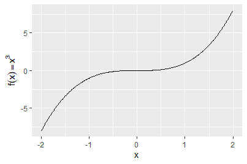
在ggtext包(Wilke 2020)和ggplot2主题系统下，可以使用Markdown语法进行标记：
df <- data.frame(x = 1:3, y = 1:3)
base <- ggplot(df, aes(x, y)) +
geom_point() +
labs(x = "Axis title with *italics* and **boldface**")
base
base + theme(axis.title.x = ggtext::element_markdown())
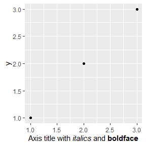
未出现斜体和加粗效果，暂未发现原因。日后会处理。
字体
df <- data.frame(x = 1, y = 3:1, family = c("sans", "serif", "mono"))
ggplot(df, aes(x, y)) +
geom_text(aes(label = family, family = family))如需更多字体，使用showtext包(Qiu and details. 2022)：
library(showtext)
# font_install(source_han_serif()) # 安装字体库
font_families()
#> [1] "sans" "serif"
#> [3] "mono" "wqy-microhei"
#> [5] "source-han-serif-cn"
head(font_files()) # 查看系统字体
#> path file family face
#> 1 C:/Windows/Fonts AGENCYB.TTF Agency FB Bold
#> 2 C:/Windows/Fonts AGENCYR.TTF Agency FB Regular
#> 3 C:/Windows/Fonts ALGER.TTF Algerian Regular
#> 4 C:/Windows/Fonts ANTQUAB.TTF Book Antiqua Bold
#> 5 C:/Windows/Fonts ANTQUABI.TTF Book Antiqua Bold Italic
#> 6 C:/Windows/Fonts ANTQUAI.TTF Book Antiqua Italic
#> version ps_name
#> 1 Version 1.01 AgencyFB-Bold
#> 2 Version 1.01 AgencyFB-Reg
#> 3 Version 1.57 Algerian
#> 4 Version 2.35 BookAntiqua-Bold
#> 5 Version 2.35 BookAntiqua-BoldItalic
#> 6 Version 2.35 BookAntiqua-Italicshowtext_auto()
font_add("simkai", "simkai.ttf")
font_add("constan", "constan.ttf", italic = "constani.ttf")
ggplot(NULL, aes(x = 1, y = 1)) + ylim(0.8, 1.2) +
theme(axis.title = element_blank(), axis.ticks = element_blank(),
axis.text = element_blank()) +
annotate("text", 1, 1.1, family = "simkai", size = 15,
label = "你好，世界！") +
annotate("text", 1, 0.9, label = 'Chinese for "Hello, world!"',
family = "constan", fontface = "italic", size = 8)加粗、斜体
df <- data.frame(x = 1, y = 3:1, face = c("plain", "bold", "italic"))
ggplot(df, aes(x, y)) +
geom_text(aes(label = face, fontface = face))对齐方式
df <- data.frame(
x = c(1, 1, 2, 2, 1.5),
y = c(1, 2, 1, 2, 1.5),
text = c(
"bottom-left", "top-left",
"bottom-right", "top-right", "center"
)
)
ggplot(df, aes(x, y)) +
geom_text(aes(label = text))
ggplot(df, aes(x, y)) +
geom_text(aes(label = text), vjust = "inward", hjust = "inward")微调
df <- data.frame(resp = c(1.2, 3.4, 2.5), trt = letters[1:3])
ggplot(df, aes(resp, trt)) +
geom_point() +
geom_text(aes(label = paste0("(", resp, ")"))) +
xlim(1, 3.6)
ggplot(df, aes(resp, trt)) +
geom_point() +
geom_text(aes(label = paste0("(", resp, ")")), nudge_y = -.25) +
xlim(1, 3.6)重叠检查
按照标签在数据框中出现的先后顺序绘制标签。如后来的标签覆盖已绘制的标签，则忽略后来的标签。实际使用中，可以对标签进行优先级排序，后绘制带有标签的图，以强调重要的数据。
ggplot(mpg, aes(displ, hwy)) +
geom_text(aes(label = model)) +
xlim(1, 8)
ggplot(mpg, aes(displ, hwy)) +
geom_text(aes(label = model), check_overlap = TRUE) +
xlim(1, 8)
另一种方法是利用ggrepel包(Slowikowski 2021)的geom_text_repel()函数进行绘制：
mini_mpg <- mpg[sample(nrow(mpg), 20), ]
ggplot(mpg, aes(displ, hwy)) +
geom_point(color = "red") +
ggrepel::geom_text_repel(data = mini_mpg, aes(label = class))
#> Warning: ggrepel: 3 unlabeled data points (too many overlaps).
#> Consider increasing max.overlaps
ggfittext包(Wilkins 2021)可以确保文本标签适应其放置的空间：
library(ggfittext)
ggplot(animals, aes(type, flies, label = animal)) +
geom_tile(fill = "white", color = "black") +
geom_fit_text()
ggplot(animals, aes(type, flies, label = animal)) +
geom_tile(fill = "white", color = "black") +
geom_fit_text(reflow = TRUE)ggplot(economics, aes(date, unemploy)) +
geom_line()
# 美国总统任期和党派
presidential <- subset(presidential, start > economics$date[1])
ggplot(economics) +
geom_rect(data = presidential,
aes(xmin = start, xmax = end, fill = party),
ymin = -Inf, ymax = Inf, alpha = .2) +
geom_vline(data = presidential,
aes(xintercept = as.numeric(start)),
color = "grey50", alpha = .5) +
geom_text(data = presidential,
aes(start, y = 2500, label = name),
size = 3, vjust = 0, hjust = 0, nudge_x = 50) +
geom_line(aes(date, unemploy)) +
scale_fill_manual(values = c("blue", "red")) +
labs(x = "date", y = "unemployment")
p <- ggplot(mpg, aes(displ, hwy)) +
geom_point(data = filter(mpg, manufacturer == "subaru"),
color = "orange", size = 3) +
geom_point()
p +
annotate("point", x = 5.5, y = 40, color = "orange", size = 3) +
annotate("point", x = 5.5, y = 40) +
annotate("text", x = 5.6, y = 40, label = "subaru", hjust = "left")
# 更好的方法
p +
annotate("curve", x = 4, y = 35, xend = 2.65, yend = 27,
curvature = .3, arrow = arrow(length = unit(2, "mm"))) +
annotate("text", x = 4.1, y = 35, label = "subaru", hjust = "left")directlabels包(Hocking 2021)：
ggplot(mpg, aes(displ, hwy, color = class)) +
geom_point()
ggplot(mpg, aes(displ, hwy, color = class)) +
geom_point(show.legend = FALSE) +
directlabels::geom_dl(aes(label = class), method = "smart.grid")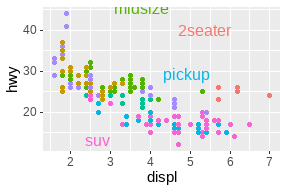
ggforce包(Pedersen 2021a):
ggplot(mpg, aes(displ, hwy)) +
geom_point() +
ggforce::geom_mark_ellipse(aes(label = cyl, group = cyl))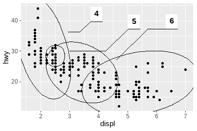
gghighlight包(Yutani 2022)：
data(Oxboys, package = "nlme")
ggplot(Oxboys, aes(age, height, group = Subject)) +
geom_line() +
geom_point() +
gghighlight::gghighlight(Subject %in% 1:3)分面注释：
ggplot(mpg, aes(displ, hwy, color = factor(cyl))) +
geom_point() +
gghighlight::gghighlight() +
facet_wrap(vars(cyl))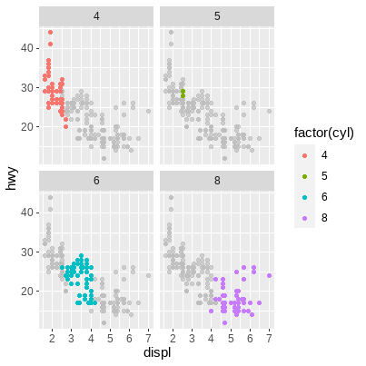
ggplot2的语法是关于创建单个图形的，虽然分面系统提供了产生多个子图的方法，但都属于同一个可视化的部分，它们共享图层、数据和标度。我们经常需要将多幅独立创建的图形组合为一张图，许多包已应运而生，这里重点介绍patchwork包(Pedersen 2020)。
绘制四幅图形用于排列：
p1 <- ggplot(mpg) +
geom_point(aes(x = displ, y = hwy))
p2 <- ggplot(mpg) +
geom_bar(aes(x = as.character(year), fill = drv), position = "dodge") +
labs(x = "year")
p3 <- ggplot(mpg) +
geom_density(aes(x = hwy, fill = drv), colour = NA) +
facet_grid(rows = vars(drv))
p4 <- ggplot(mpg) +
stat_summary(aes(x = drv, y = hwy, fill = drv), geom = "col", fun.data = mean_se) +
stat_summary(aes(x = drv, y = hwy), geom = "errorbar", fun.data = mean_se, width = 0.5)+并未指定任何具体的布局，只是将图形显示在一起。在没有布局的情况下，facet_wrap()中管理行和列的算法将用于决定行数和列数。如果我们添加3幅图形，则会创建1×3的网格；添加4幅图形，则会创建2×2的网格。
p1 + p2 + p3 + p4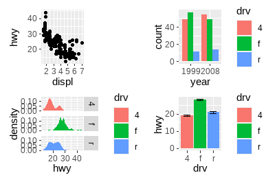
可以看出，patchwork关注绘图区域的对齐。
p1 + p2 + p3 + plot_layout(ncol = 2)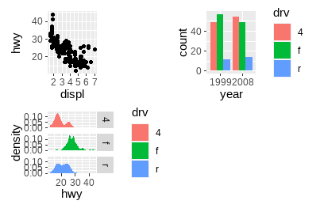
/设置列数为1，|设置行数为1：
# 两幅图排为1列
p1 / p2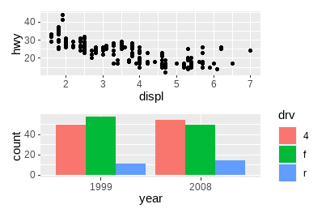
# 两幅图排为1行
p3 | p4/和|可以进行组合以创建更加复杂的图形排列：
p3 | (p2 / (p1 | p4))针对特别复杂的布局，可以在plot_layout()的design参数中制定文本形式的非表格布局：
layout <- "
AAB
C#B
CDD
"
layout
#> [1] "\nAAB\nC#B\nCDD\n"
p1 + p2 + p3 + p4 + plot_layout(design = layout)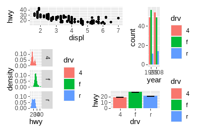
从上可以看出，图形间的图例经常有多余，patchwork提供了简便的处理方法，可以删除完全一样的图例：
p1 + p2 + p3 + plot_layout(ncol = 2, guides = "collect")
可以指定绘图区域，优化空间使用：
p1 + p2 + p3 + guide_area() + plot_layout(ncol = 2, guides = "collect")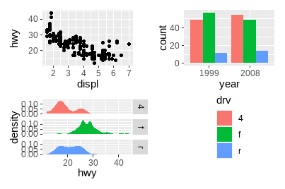
在patchwork渲染前，所有子图仍为ggplot对象，因此在组合起来后可以被修改，使用[[]]索引后进行调整：
p12 <- p1 + p2
p12[[2]] <- p12[[2]] + theme_light()
p12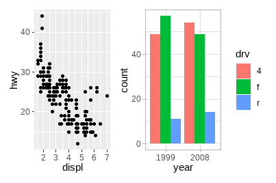
使用&一次性修改所有子图：
p1 + p4 & theme_minimal()如果图形在轴上具有相同的映射，可以用这种方法指定共同轴：
p1 + p4 & scale_y_continuous(limits = c(0, 45))
一旦图形组合完毕，它们就成为一个整体，可以通过plot_annotation()向整体添加标题、副标题等注释。
p34 <- p3 + p4 + plot_annotation(
title = "A closer look at the effect of drive train in cars",
caption = "Source: mpg dataset in ggplot2"
)
p34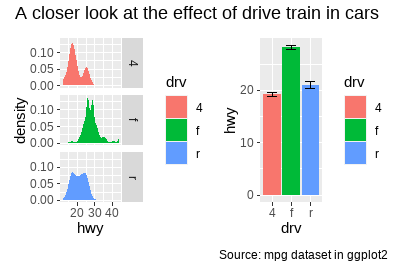
p34 + plot_annotation(theme = theme_gray(base_family = "mono"))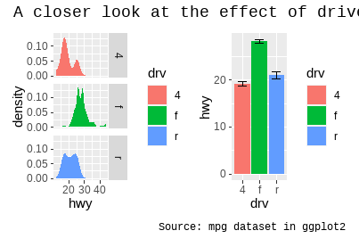
为子图添加标签在科学文献中尤其常用，ggplot2带有tag元素，patchwork提供tag_levels参数进行自动设置：
p123 <- p1 | (p2 / p3)
p123 + plot_annotation(tag_levels = "I") # 使用大写罗马数字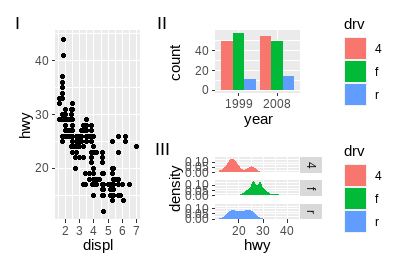
使用嵌套定义新的标签级别：
p123[[2]] <- p123[[2]] + plot_layout(tag_level = "new")
p123 + plot_annotation(tag_levels = c("I", "a"))patchwork提供了inset_element()函数用于在给定的区域上放置图形：
p1 + inset_element(p2, left = .5, bottom = .4, right = .9, top = .95)p24 <- p2 / p4 + plot_layout(guides = "collect")
p1 + inset_element(p24, left = .5, right = .9, bottom = .05, top = .9)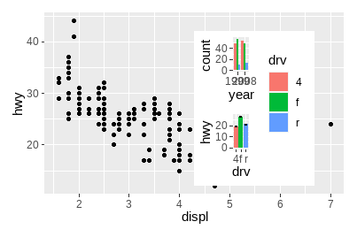
p12 <- p1 + inset_element(p2, left = .5, right = .9, bottom = .5, top = .95)
p12 & theme_bw()p12 + plot_annotation(tag_levels = "A")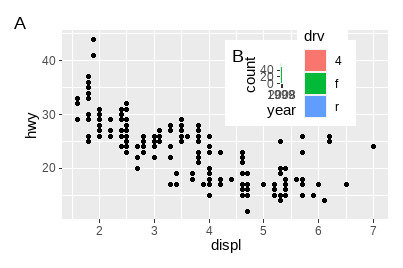
更多patchwork的功能，可以查看它的网站：https://patchwork.data-imaginist.com/。